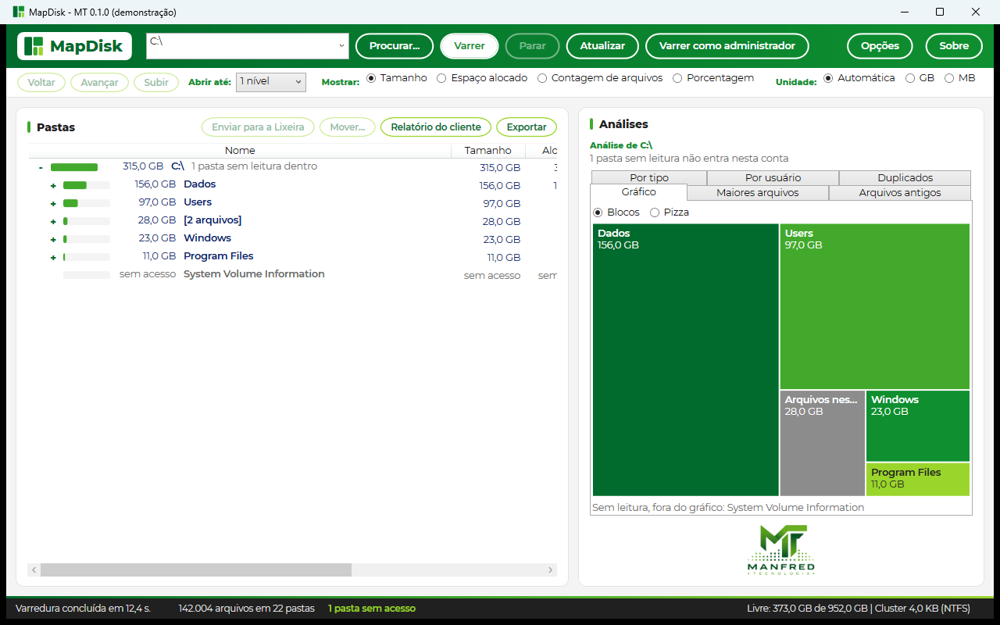
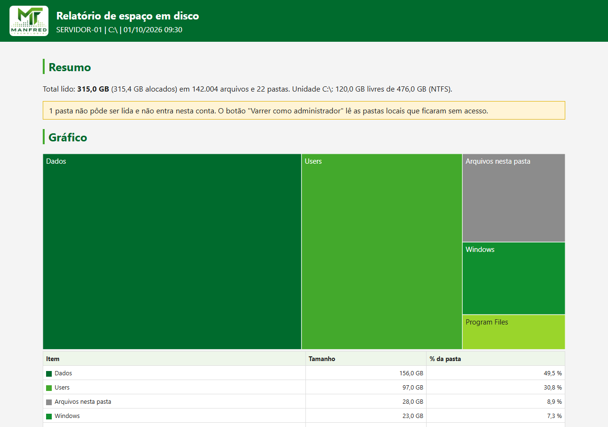

O que ele faz
- Varre uma unidade, uma pasta ou um caminho de rede e mostra as pastas em árvore, da maior para a menor.
- Mostra num gráfico de blocos ou de pizza o que ocupa cada pasta.
- Lista os maiores arquivos, os arquivos antigos e o espaço por tipo de arquivo e por usuário.
- Acha arquivos repetidos, comparando o conteúdo, quando você pede.
- Envia para a Lixeira ou move o que você escolher, sempre com confirmação.
- Gera um relatório para o cliente decidir o que apagar e lê a resposta dele.
- Grava o relatório do técnico em HTML, com o gráfico, e a lista das pastas em CSV.
- Roda pela linha de comando, para varrer e gerar relatório sem abrir a janela.

Relatório do técnico

Um arquivo só, com o resumo da pasta, o gráfico, as maiores pastas e arquivos, o espaço por tipo e os arquivos antigos. Abre em qualquer navegador e vira PDF pelo "Imprimir".
Pela linha de comando:
mapdisk varrer D:\ --relatorio d.html
Segurança
O programa não envia nenhuma informação pela internet. Abre como usuário comum e só pede administrador pelo botão "Varrer como administrador". Não instala nada: roda de um pendrive ou de uma pasta de rede.
Antes de apagar ou mover, mostra a lista, o total e o destino, e espera a sua confirmação. Cada ação fica registrada num arquivo do computador. As pastas do sistema do Windows e a raiz das unidades ficam bloqueadas para apagar e mover. Pasta que não pôde ser lida aparece como "sem acesso", nunca como zero.
Uso autorizado
O MapDisk - MT mostra o espaço ocupado em discos e pastas e permite enviar arquivos para a Lixeira, movê-los ou excluí-los definitivamente. Use o programa só em computadores e pastas que você tem autorização para administrar. Antes de apagar ou mover, confira a lista de itens e o destino. Em pastas de rede e em unidades removíveis ou mapeadas, o MapDisk não usa a Lixeira: a exclusão não pode ser desfeita pelo programa e os itens só voltam por uma cópia de segurança. O programa não envia nenhuma informação para fora do computador.
Licença e garantias
O MapDisk - MT é distribuído gratuitamente sob a GPL-3.0. Os tamanhos mostrados dependem do que o sistema de arquivos informa e das permissões da conta que roda o programa, e podem ficar incompletos quando alguma pasta não pode ser lida. A licença não inclui promessa de funcionamento em todo computador nem serviço de suporte técnico. Quem apaga ou move arquivos pelo programa decide o que tratar e deve ter cópia de segurança do que for importante. As disposições da GPL-3.0 sobre garantias e responsabilidade aplicam-se nos limites permitidos pela legislação brasileira e não restringem direitos assegurados ao consumidor por lei.
Código-fonte e versões: github.com/manfredjr/mapdisk.
Privacidade
O programa não coleta nem envia dados. Esta página não tem formulário, propaganda nem ferramenta de estatística. A hospedagem e o Cloudflare, que entrega a página, registram dados técnicos de acesso, como o endereço IP, e podem gravar um cookie técnico de segurança.